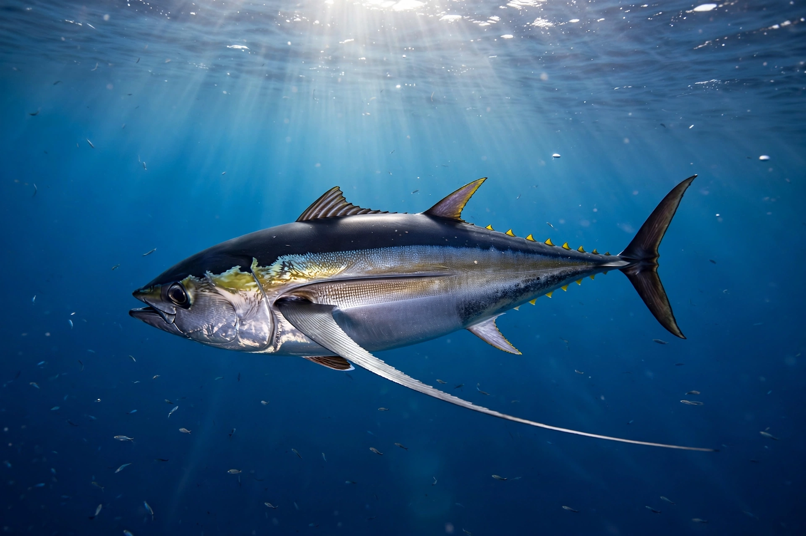

Albacore
The albacore (Thunnus alalunga), known also as the longfin tuna, is a species of tuna of the order Scombriformes. It is found in temperate and tropical waters globally in the epipelagic and mesopelagic layers. There are six distinct stocks known globally in the Atlantic, Pacific, and Indian oceans, as well as the Mediterranean Sea. The albacore has an elongate, fusiform body with a conical head, large eyes, and remarkably long pectoral fins — the source of its scientific name alalunga, "long wing".

| Albacore | |
|---|---|
| Kingdom | Animalia |
| Family | Scombridae |
| Genus | Thunnus |
| Species | T. alalunga |
| Conservation | Least Concern (IUCN) |
Description
Albacore grow to about 1.4 m in length and up to around 60 kg. Their bodies are dark blue above and silvery white below; the first dorsal fin is deep yellow, the second dorsal and anal fins are light yellow, and the anal finlets are dark. Like other tunas they are fast, warm-bodied predators that feed on fish, squid and crustaceans.
Fisheries
The albacore is an important food fish and a major target of commercial tuna fisheries, caught by trolling, pole-and-line, longline and purse seine. Canned albacore is sold as "white tuna" in the United States and is notably higher in mercury than canned "light" tuna, which has prompted consumption advisories, particularly for children and pregnant women. Stocks are managed internationally by regional fisheries bodies; after a period in which the species was assessed as Near Threatened, improved stock assessments led the IUCN to list it as Least Concern in 2021.
Categories: Thunnus · Commercial fish · Fish of the Atlantic Ocean